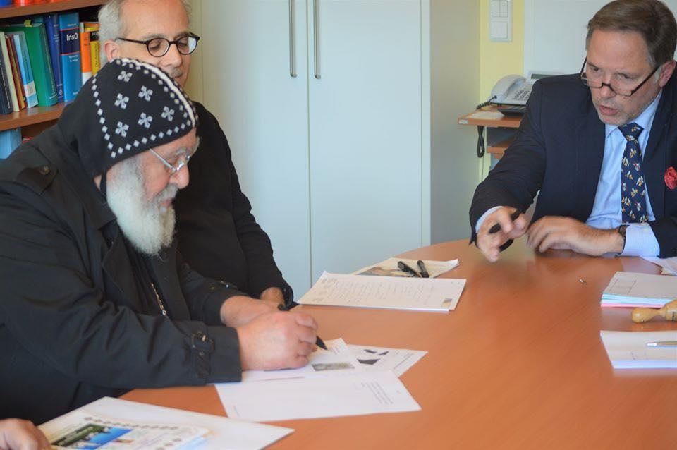

43 العذراء كنيسة عقد توقيع احتفالية األلمانية بأندرناخ 19 ديسمبر , 2019 شكرى نادر والقديس مريم العذراء السيدة كنيسة أرض عقد بتوقيع ،المانيا جنوب أسقف ،ميشائيل نيافة قام .بألمانيا أندرناخ في الرسول بطرس األنبا ونيافة تواضروس البابا لقداسة تهنئة وقدم التوقيع بخبر المانيا جنوب إيبارشية واحتفلت “ األيبارشية وكتبت ميشائيل واستكملت ،فيه ونفرح نبتهج ،الرب صنعه الذي اليوم هو هذا : بنعمة بيد أندرناخ في الرسول بطرس والقديس مريم العذراء القديسة كنيسة عقد توقيع تم قد اليوم المسيح ميشائيل األنبا الجليل الحبر النيافة صاحب القس الكنيسة وراعى مالك وبحضور المانيا جنوب اسقف .”جورجى فيلبس ا :(باأللمانية ندرناخ Andernach تقع ألمانية بلدة هي ) االين نهر على في مقاطعة راينلند بفالتس . بـ سكانها عدد يقدر 30,000 نسمة . https://www.wataninet.com/2019/12
St. Markus · 2020 · Deutsch
احتفالية توقيع عقد كنيسة العذراء بأندرناخ األلمانية-
Ausgabe 1 · Seite 43
